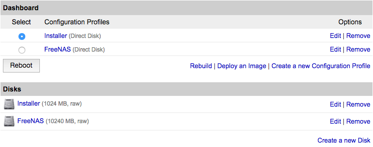
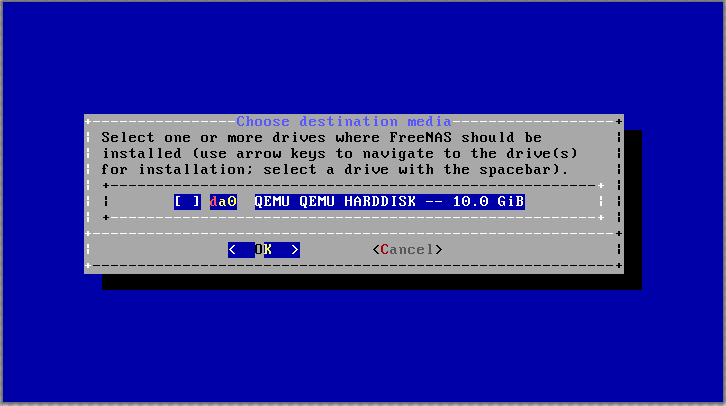
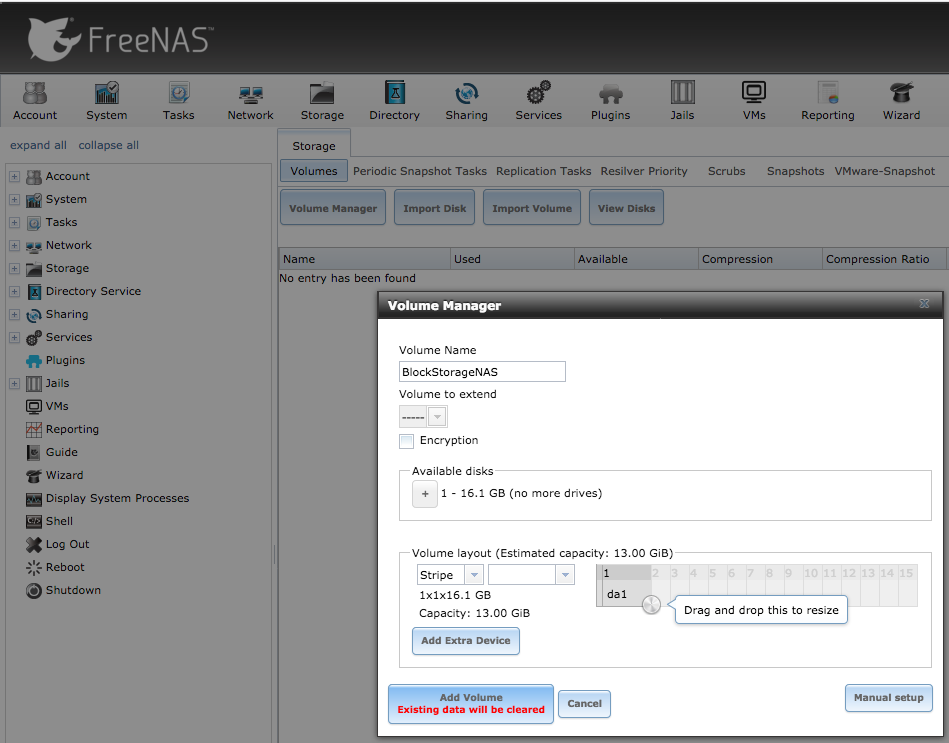
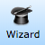
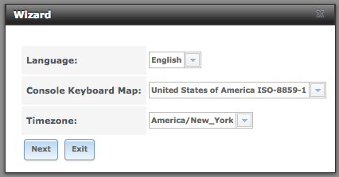
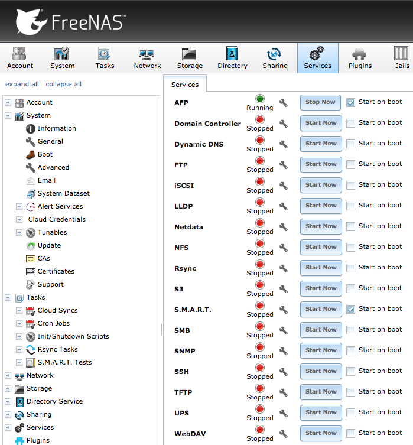

Install FreeNAS on a Linode with Block Storage
Updated by Linode Written by Edward Angert
Network-attached storage (NAS) allows multiple client devices to access the connected storage media as though it’s stored locally to the device. FreeNAS is FreeBSD-based NAS software, configurable via a browser interface.
This guides shows how to install FreeNAS on a Linode and attach a Block Storage Volume so that you can access both FreeNAS and the Storage Volume from your computer, phone, or tablet almost anywhere in the world.
CautionFreeNAS is not officially supported by Linode at this time. This means that features like the Linode Backup Service and Lish will be unavailable to you.
Any issues you may encounter with FreeNAS on your Linode are outside the scope of Linode Support. For further help with this guide’s subject, you can ask questions on the Linode Community Site.
Prepare Your Linode
Create a Linode in your preferred data center. Ensure that your Linode has at least 8GB RAM and at least 11GB of available disk space. FreeNAS recommends 16GB of RAM for media servers. Visit the official requirements for more information.
Disable the Lassie Shutdown Watchdog to prevent it from attempting to restart your Linode without your input. You can disable Lassie in the Settings tab of the Linode Manager under Shutdown Watchdog.
-
Label: Installer
- Type: unformatted / raw
- Size: 1024
Label: FreeNAS
- Type: unformatted / raw
- Size: Can be set to use remaining disk. At least 10240MB
Create two configuration profiles with the following settings. In each profile, disable all of the options under Filesystem/Boot Helpers.
Label: Installer
- Kernel: Direct Disk
- /dev/sda: FreeNAS
- /dev/sdb: Installer
- root / boot device: Standard /dev/sdb
- Filesystem/Boot Helpers: Select No for each Helper
Label: FreeNAS
- Kernel: Direct Disk
- /dev/sda: FreeNAS
- root / boot device: Standard /dev/sda
- Filesystem/Boot Helpers: Select No for each Helper
Create an Installer Disk
Boot into Rescue Mode with the installer disk mounted to
/dev/sdaand access your Linode using Lish from the Remote Access tab of the Linode Manager.Once in Rescue Mode, run the following command to set the latest FreeNAS release (11.1 at the time of this writing) as a variable:
iso=https://download.freenas.org/11/latest/x64/FreeNAS-11.1-U4.isoRun the
update-ca-certificatesprogram to allow the secure download:update-ca-certificatesDownload the FreeNAS ISO image and expand it to the Installer disk:
curl $iso | dd of=/dev/sdaWhen the command finishes, reboot into the Installer profile:

Go to the Remote Access tab in the Linode Manager. Access your Linode using Glish to start the installation.
Install FreeNAS
- Press Enter to Install/Upgrade.
Press the Spacebar to select the FreeNAS disk (
da0in this screenshot) and press Enter:
The installation shows a warning that all data on the disk will be deleted. Press Enter to continue.
Enter a root password, tab to the next field to re-enter it, and press Enter to continue.
Press Enter to Boot via BIOS.
There’s no media to remove. Press Enter to acknowledge the successful installation message.
Press 4 to select Shutdown System, and press Enter to end the session. Close the Glish window.
In the Manager, shut the Linode down.
Boot and Configure FreeNAS
Select the FreeNAS configuration profile, and click Boot:
SSH and Lish are disabled in FreeNAS. Use Glish to monitor the first boot which takes several minutes. Once booted, close Glish and proceed to the next step to use the web interface for configuration.
Use a web browser to navigate to the Linode’s IP address. Log in with the user
rootand the password set in Step 4 of the previous section. Close any popup menu that appears when you first log in.Click the Network icon and complete the network information using the Default Gateways and DNS Resolvers found in the Remote Access tab of the Linode Manager. Use the DNS Resolvers information to fill in the Nameserver fields. Click Save before continuing.
Select the Interfaces section of the Network tab, and click Add Interface. Name the interface and enable DHCP, then click OK.
Add a Block Storage Volume to FreeNAS
Add or attach a Block Storage Volume to the Linode. After you attach your Block Storage Volume, the Linode Manager will present command-line instructions for mounting it from your Linode, but you can disregard these.
Reboot the Linode from the Linode Manager. After a few minutes, launch Glish from the Remote Access tab again. You can monitor the reboot progress in Glish.
Format Block Storage Volume as ZFS
CautionFormatting will erase all data on the volume.
Log back into the web interface for FreeNAS.
Click the Storage icon at the top, then View Disks to confirm that FreeNAS recognized the Block Storage Volume.
Return to the Storage tab and click Volume Manager. Enter a Volume Name and under Available Disks click the + next to the Block Storage Volume. Below Volume layout, select Stripe. Click Add Volume to format and attach the Volume:

Set Permissions, Share the Volume, and Complete Configuration
Click the Wizard icon:

Select your language, keyboard map, and timezone and click Next:

When prompted for the Directory Service, press Next to skip the step.
Enter a Share name and purpose. Click Ownership to configure the Permissions to allow the client to access and manage access. Visit the official FreeNAS documentation for more information about the available options. Click Add, then Next to continue.
Configure e-mail notification settings or press Next to skip and continue.
Press Confirm and the Wizard will complete the remaining configuration.
Enable SSH Root Login (Optional)
FreeNAS has SSH disabled by default. This is a more secure configuration, but makes it difficult to troubleshoot issues from the command line.
Click the Services icon, then the wrench icon on the SSH line:

Check Login as Root with password and press OK. Check Start on Boot if you would like to keep the setting enabled through future reboots. Click Start Now.
Use the same username and password as for the web interface.
Next Steps
Now that FreeNAS is running connected to your Block Storage Volume, you can connect to it from your local machine, to a Plex server, or a variety of other platforms using plugins.
More Information
You may wish to consult the following resources for additional information on this topic. While these are provided in the hope that they will be useful, please note that we cannot vouch for the accuracy or timeliness of externally hosted materials.
Join our Community
Find answers, ask questions, and help others.
This guide is published under a CC BY-ND 4.0 license.